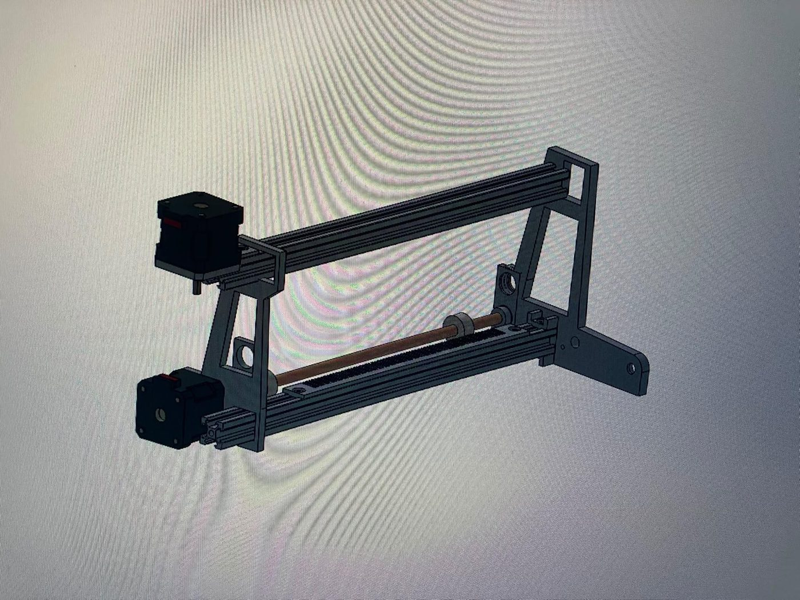
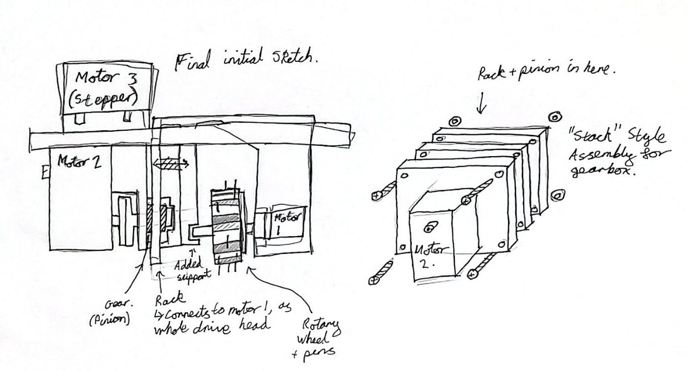
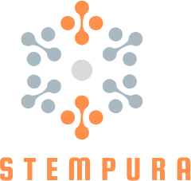

Tested with a real user
We piloted printing board agendas with a blind Braille user, who found switching between reports and agendas with assistive technology slow. She read our trial print easily and backed its value for meetings.
Accessible culture at your fingertips
A portable Braille printer for short runs, from menus and board agendas to worksheets and children’s books. It’s built from about £90 of parts, and it’s open source, so anyone can make one.


2.2 billion people live with a near or distance vision impairment, according to the World Health Organization.
For many blind and partially sighted people, Braille books, worksheets and everyday printed material are hard to find or too costly to make.
Even the cheapest automated Braille embossers cost £1,500 to £3,500. That puts short, everyday prints out of reach for individuals, small schools and libraries, especially in poorer communities.
BrailleGo! rethinks the printer around cost and simplicity. You type on a phone or laptop, and a motorised pin-punch mechanism embosses your text as Braille onto A4 or A5 paper.
Common parts and a 3D-printed frame make it cheap to build and easy to repair. It’s slower than an industrial embosser, and that’s the trade-off: it’s made for short runs, not whole books.
Every Braille character is a cell of six dots in two columns of three. BrailleGo! embosses one column at a time, so the print head only ever has to choose between eight patterns.
The printer’s ESP32 runs its own Wi-Fi network called BrailleGo!. Join it from a phone or laptop and type into the web page.
The software converts each letter into its six-dot pattern and splits it into a left and right column.
A stepper motor drives a belt to move the print head along the rail, while a small servo turns a daisywheel to the right pin pattern.
A stronger servo drives a rack and pinion that lowers the whole head, pressing up to three pins into the paper at once.
A second stepper turns the rollers to move the paper on, ready for the next line.
Two brothers, two halves. Tom designed the mechanics and Felix did the electronics and code. What you see is the third major redesign.




The printer embosses whatever the software sends it, so with the right conversion tools it can produce:
Starting prices for automated Braille embossers, compared with BrailleGo!’s target price. Industrial machines like the Braillo 300 cost tens of thousands of pounds and are left off the chart.
We piloted printing board agendas with a blind Braille user, who found switching between reports and agendas with assistive technology slow. She read our trial print easily and backed its value for meetings.
Most people with sight loss live in developing countries. In Peru, for example, an affordable printer could make low-cost worksheets for schools and bring Braille to rural and underfunded regions.
The concept of an affordable, portable Braille printer for short-run needs is brilliant, and one I can imagine many uses for.
BrailleGo! is a product that has the potential to significantly increase independence for vision impaired individuals globally.
To read and to write are fundamental to human life. Tom and Felix’s inexpensive machine brings the possibility of reading and writing in Braille to those regions of the world where poverty and blindness are endemic.
BrailleGo! is open source. Everything you need to make one is in our GitHub repository.
Open BrailleGoFiles on GitHub
We’re Tom and Felix Hunt, two brothers from Leeds who love engineering and robotics. We built BrailleGo! for the World Robot Olympiad 2026, where the theme is Robots Meet Culture.
Mechanical design: the frame, print head and every custom part.
Electronics and code: wiring, power, the circuit board and firmware.
Coach.
Faster printing with a micro stepper in place of the small servo, a punch mechanism that meets the full Braille specification, and a proper enclosure to protect the electronics.

